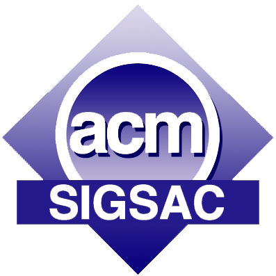

3rd ACM Cyber-Physical System Security Workshop
|
 |
Important Dates |
Submissions Due:
Notification:
Camera-ready Due:
Workshop:Jan 12, 2017
Feb 15, 2017
Feb 25, 2017
April 2, 2017
Call for Papers |
Cyber-Physical Systems (CPS) consist of large-scale interconnected systems of heterogeneous components interacting with their physical environments. There are a multitude of CPS devices and applications being deployed to serve critical functions in our lives. The security of CPS becomes extremely important. This workshop will provide a platform for professionals from academia, government, and industry to discuss how to address the increasing security challenges facing CPS. Besides invited talks, we also seek novel submissions describing theoretical and practical security solutions to CPS. Papers that are pertinent to the security of embedded systems, SCADA, smart grid, and critical infrastructure networks are all welcome, especially in the domains of energy and transportation. Topics of interest include, but are not limited to:
|
|
Submission Instructions |
Submitted papers must not substantially overlap papers that have been published or that are simultaneously submitted to a journal or a conference with proceedings. All submissions should be appropriately anonymized (i.e., papers should not contain author names or affiliations, or obvious citations). Submissions must be in double-column ACM SIG Proceedings format, and should not exceed 12 pages. Position papers and short papers of 6 pages describing the work in progress are also welcome. Only pdf files will be accepted. Authors of accepted papers must guarantee that their papers will be presented at the workshop. At least one author of the paper must be registered at the appropriate conference rate. Accepted papers will be published in the ACM Digital Library. There will also be a best paper award.
Paper submission site: https://easychair.org/conferences/?conf=cpss2017.
Organizers |
Steering Committee
Dieter Gollmann (Hamburg University of Technology, Germany)
Ravishankar Iyer (UIUC, USA)
Douglas Jones (ADSC, Singapore)
Javier Lopez (University of Malaga, Spain)
Jianying Zhou (I2R, Singapore) - Chair
Program Chairs
Jianying Zhou (I2R, Singapore)
Ernesto Damiani (KUSTAR, UAE)
Publicity Chair
Cristina Alcaraz (University of Malaga, Spain)
Publication Chair
Ying Qiu (I2R, Singapore)
| Program Committee | |
|
Cristina Alcaraz (University of Malaga, Spain) Basel Alomair (KACST, Saudi Arabia) Claudio Ardagna (Università degli Studi di Milano, Italy) Ioannis Askoxylakis (FORTH, Greece) Alvaro Cardenas (University of Texas at Dallas, USA) Lorenzo Cavallaro (RHUL, UK) Stephen Chai (Thales, Singapore) Aldar Chan (University of Hong Kong, HK) Binbin Chen (ADSC, Singapore) Xiaofeng Chen (Xidian University, China) Frédéric Cuppens (Telecom Bretagne, France) Nora Cuppens (Telecom Bretagne, France) Sebti Foufou (Qatar University, Qatar) Aurelien Francillon (EURECOM, France) Dieter Gollmann (Hamburg Uni of Tech, Germany) Felix Gomez-Marmol (NEC Labs, Germany) Huaqun Guo (I2R, Singapore) Jin Han (Twitter, USA) Masaki Hashimoto (Institute of Info Security, Japan) Matt Henricksen (I2R, Singapore) Thomas Hildebrandt (IT Uni of Copenhagen, Denmark) Xinyi Huang (FJNU, China) Zbigniew Kalbarczyk (UIUC, USA) Sokratis Katsikas (NTNU, Norway) Shinsaku Kiyomoto (KDDI R&D Labs, Japan) Marina Krotofil (Honeywell, USA) Hoon Wei Lim (I2R, Singapore) Peter Loh (SIT, Singapore) |
Javier Lopez (University of Malaga, Spain) Xiapu Luo (Hong Kong Polytechnic University, HK) Michail Maniatakos (NYU-Abu Dhabi, UAE) Konstantinos Markantonakis (RHUL, UK) Weizhi Meng (DTU, Denmark) Chris Mitchell (RHUL, UK) Ganesh Narayanan (Ernst & Young, Singapore) Surya Nepal (CSIRO, Australia) Susan Pancho-Festin (Uni of Philippines, Philippines) Michael Papay (Northrop Grumman, USA) Axel Poschmann (NXP, Germany) Indrakshi Ray (Colorado State University, USA) Gritzalis Stefanos (University of the Aegean, Greece) Rui Tan (NTU, Singapore) William Temple (ADSC, Singapore) Nils Ole Tippenhauer (SUTD, Singapore) Alberto Trombetta (Università dell'Insubria, Italy) Luca Viganò (King’s College London, UK) Claire Vishik (Intel, USA) Long Wang (IBM Research, USA) Yang Xiang (Deakin University, Australia) Jia Xu (I2R, Singapore) David Yau (SUTD, Singapore) Chan Yeob Yeun (KUSTAR, UAE) Ye Zhang (Google, USA) Peng Zhou (Shanghai University, China) Sencun Zhu (Pennsylvania State University, USA) Saman Zonouz (Rutgers University, USA) |
Case Study Projects |
Contact |
E-mail: cpss2017@easychair.org